米子市橋本のサイノカミ
阿陀萱神社の石塊幸神
最終更新：
米子市橋本のサイノカミさんは阿陀萱神社の入口脇にある石塊「幸神」です。
サイノカミさん以外にも地球外由来であるという 木俣神「産石」 が有名です。
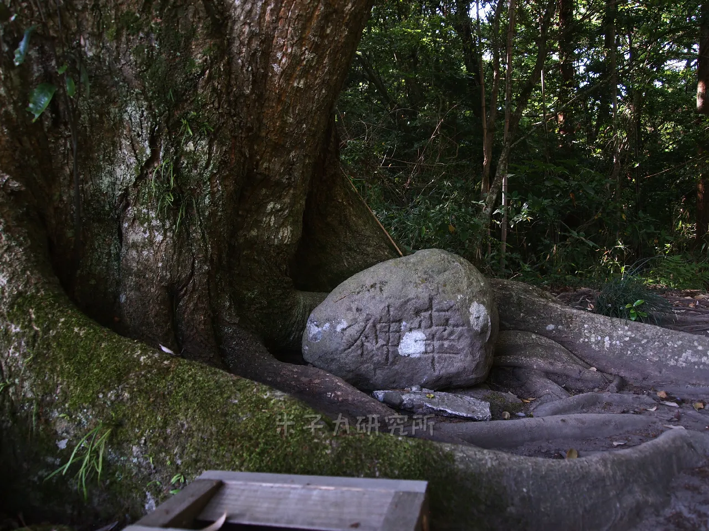
- 地域
- 鳥取県米子市
- 目印
- 阿陀萱神社
- 対象
- 自然石「幸神」 × 1基
- 参考
- 塞神考 No.374
- 石に刻まれた祈り2 No.14
- 鳥取県神社庁 阿陀萱神社
依代の石塊「幸神」について
対象の依代はそれはもう大胆に幸神と彫られた自然石で、立札までありますので絶対に迷いません。
寛永八年の神社改帳には橋本村 幸神 無社 四間四方
また嘉永二年の神社改帳には幸神 無社 神木松木 祭神猿田彦命とあります。
資料によると境内のタブノキ及び松の木で藁馬の行事が行われていたそうです。
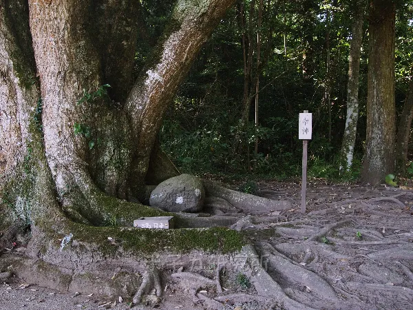
2022-06-04 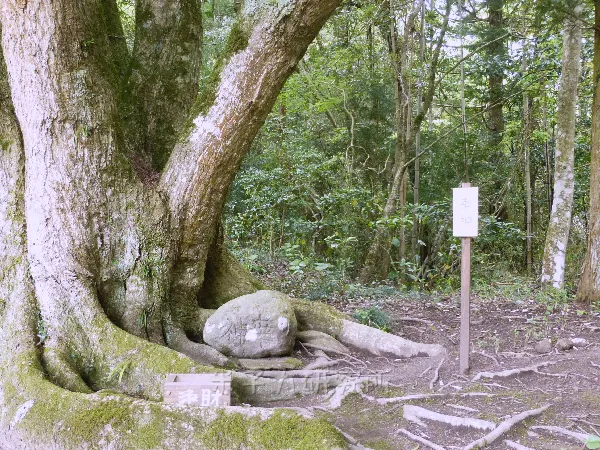
2021-05-04 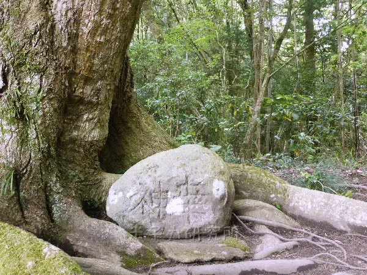
2021-05-04
阿陀萱神社について
その他サイノカミについての手がかりというわけではありませんが、以下社地内にある立て看板から由緒書きを引用させていただきます。
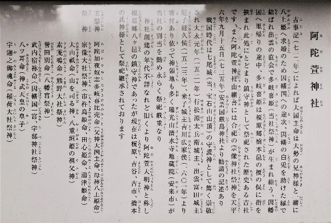
古事記（七一二年）によれば大国主命は大勢の兄神様と一緒に八上姫へ求婚のため因幡国への途次、因幡の白兎を助けた縁で結ばれ出雲の直会で多岐喜姫（当社祭神）が生まれ給う、因幡国へ里帰りの途中、多岐喜姫は榎原郷橋本邑の榎の俣に指を挟まれ此処にとどまり鎮守神として祭祀された歴史ある古社です、また阿陀萱神社由緒書には合祀の宗像神社祭神を天平六年（七三五）九月十五日安芸国厳島神社より勧請の記述あり
戦国時代は七尾城（当、宝石山山頂）の守護神として篤く崇敬され大永元年（一五二一年）行松源太兵衛城主、出雲富田城主、尼子経久侯（一五二三年）、米子城主吉川広家侯（一六〇一年）より寄付あり
依って神領地も多く瑞光山清水寺地蔵院（安来市）が当社の別当を勤め永らく祭祀厳重なり
神社創建の年代不詳なれど旧くより阿陀萱大明神と称し榎原郷八ヶ邑の鎮守神であったが現在は榎原、吉谷、古市、橋本の氏神様として祭祀継承されております
主祭神
阿陀加夜奴志多岐喜比売命（父神大国主命、母神八上姫命）
祭神
宗像大社祭神（市杵島姫命・田心姫命・湍津姫命）
大山祇命（山を司る神、八重垣姫の祖父神）
素戔嗚命（熊野大社祭神）
誉田別命（八幡宮祭神）
武内宿祢命（因幡国一宮、宇部神社祭神）
八ツ耳命（神武天皇の皇子）
宇迦之御魂命（稲荷大社祭神）
その他、阿陀萱神社周辺を散策した様子もどうぞ。
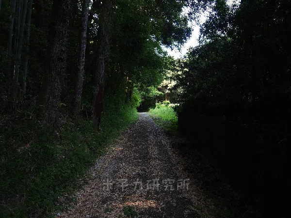
2022-06-04 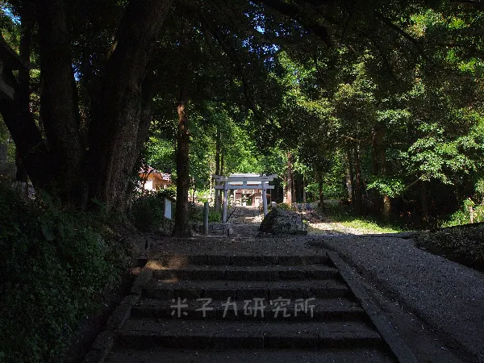
2022-06-04 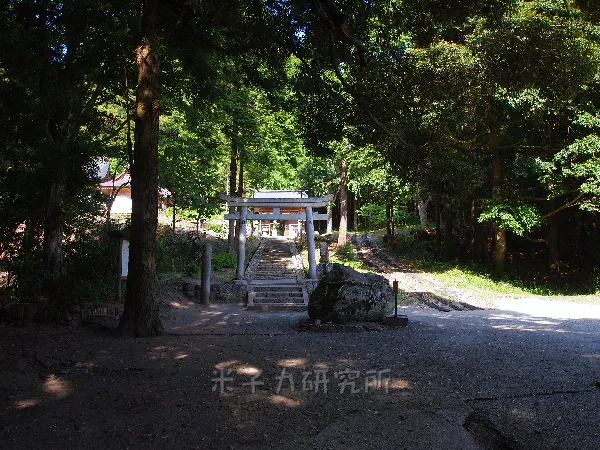
2022-06-04 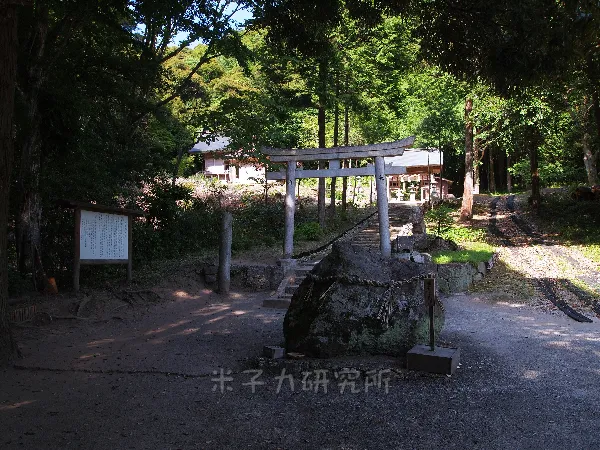
2022-06-04 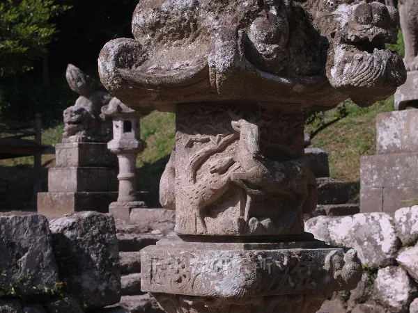
2022-06-04 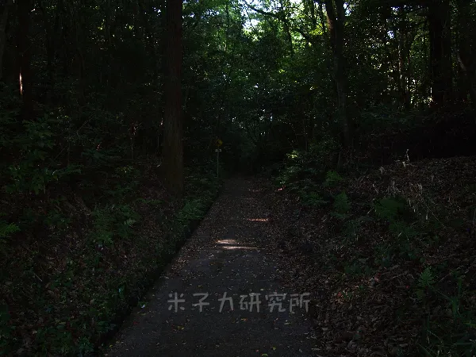
2022-06-04 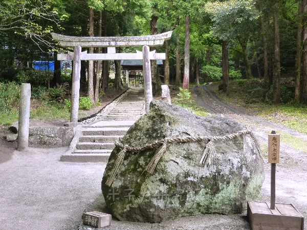
2021-05-04